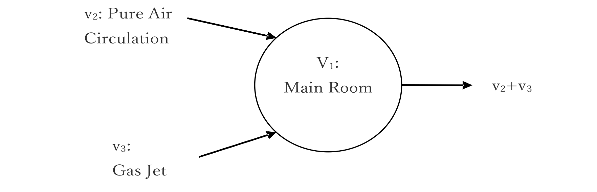
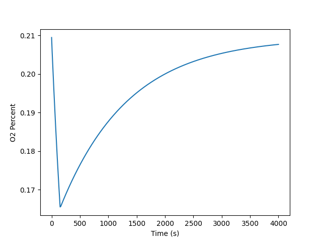

Pythonの使い方
2023-2-21 (R.1.1)
吉田 清
kiyoshi.yoshida@eagle.ocn.ne.jp
1. はじめに
最近、科学計算でよく紹介されるPythonをインストールして、Windowsで使えるようにする。Pythonは、文法が単純なので、公式などの式の入力は、EXCELのVBAと比較すると簡単である。インタープリターであるので、即座に動作するのが便利である。同様のソフトにMatlabがあるが有料であるが、Pythonは無料のため、誰でも利用できるので、計算方法の配布に便利である。数値解析のPythonの参考文献[1][2][3][4]に示す。
2. Pythonのインストール
2.1 Python.orgから
https://www.python.org/からWindows64bit版最新版をダウンロードしてインストールする。インストール先は、C:\bin\python などのように短いほうが便利である。
a) インストールの最初の画面で、Customize installation を選択、Add Python 3.11 to PATH にチェックを入れる。
b) Advanced Option画面でCustomize install locationにc:\bin\python などと短いディレクトリーにしておく。
2.2 モジュールのインストール
Pythonの起動は、CMDやPowerShaellではpyでも起動する。
$ python
科学計算モジュール numpy, scipy, matplotlib は CMDを起動して、以下でインストールする。
$ pip install numpy scipy matplotlib
その他のモジュールpandas ipython jupyter sympy nose などは必要な時にいつでもインストールできる。
2.3 Update
2.3.1 Python本体のUpdate
Python本体のUpdateは、新しいInstallerをPython.orgからダウンロードして、Updateを選択する。
2.3.2 一括Update
Python本体のUpdateはできないが、モジュールの一括Updateは以下のコマンドをCMDでpip-review --auto を実行。
3. 総合開発環境
Pythonの起動はエディターとコマンドプロンプトで使うのも高速であるが、IDLEはエディターを含むのでの設定が使えて便利である。右クリックから移動できる。実体は、C:\bin\python\Lib\idle.batである。
Pythonプログラムの作成は専門の総合開発環境を用いると便利である。フリーではPyCharmやVisual Code Studioが使いやすい。
4. Pythonプログラミングの要点
Python言語は、簡単な記述ができる。
構文は以下の点が違うぐらいで、他のFortranやCなどと同一である。参考文献を参考に。
- インテンドで構文が規則になっている。Pythonの推奨は空白4文字。
- コメントは、#以降。"""で複数行のコメント"""
- 継続行は"\"。
- Pythonカラム数の制限はないが、やはり、80文字すると2画面で表示できるので都合がよい。
- 関数は、from numpy import pi, sin, cosのように記載すると、わかりやすい。
- 変数の型宣言不要で、入力時に決まる。
4.1. 数値計算
Pythonは数値解析を行うに必要な主な特殊関数はNumPy [5]とScipy [6]に準備されている。また、結果の図化もmatplotlib [6]を用いると容易である。他のFortranやC言語では、独自に特殊関数などを準備する必要があるが、Pythonは、環境が整備されているので、プログラミングしやすい。Pythonの計算例を付録に例題を示す。
しかし、Pythonの計算速度はFortranやCと比較すると格段に遅い。大量の計算が必要な場合は、計算部分だけをFortranやCに変換する必要がある。
5. その他
5.1. HTMLの利用
計算用のWebページで右クリックして、「ページのソースの表示」をして、さらに右クリックで「名前を付けて保存」でダウンロードできる。との間にpythonのコードが入っている。
5.2. 日本語表示
プログラムは、極力英語で説明を書いた方が、汎用性が高い。どうしても日本語を含むファイルは時々エラーになる。その場合は以下の１行を先頭に挿入する。
# -*- coding: ANSI -*-
参考文献
- Allen Downey, “Think Python: How to Think Like a Computer Scientist”,
- 相川利樹, 「Think Python:コンピュータサイエンティストのように考えてみよう第二版」、1の和訳
- 中久喜健司、「科学技術計算のためのPython入門」、技術評論社(2016)
- David J. Pine, "Introduction to Python for Science", 2014
- NumPy, https://numpy.org/doc/stable/reference/
- Scipy, https://scipy.org/
- matplotlib, https://matplotlib.org/stable/api/pyplot_summary.html
付録 例題
部屋内に窒素ガスなどが放出されて、酸欠の危険性をチェックするプログラムを示します。 Fig. A-1 に示すモデルで、部屋V1の酸素濃度aはA1の式に示す微分方程式で表せる。ただし、部屋内のガスは瞬時に混合するものとする。
\[ \frac{\partial a}{\partial t}=\frac{v_2\left(a0-a\right)-v_{3}a}{V_1} \tag{A1}\]
ただし、
| a: | | 酸素濃度 |
| a0: | | 大気の酸素濃度 20.95% |
| V1: | (m3) | 部屋の容量 |
| V2: | (m3/s) | 換気による空気の流量 |
| V3: | (m3/s) |

Fig. A-1 酸欠解析モデル

Fig. A-2 酸素ノードの時間変化
# Hypoxia (Oxygen concentration in room) by Python
# 2022-6-28 Kiyoshi Yoshida
from numpy import zeros
import matplotlib.pyplot as plt
print("Oxygen concentration in room")
nmx = 4001 # Max. number of loop
nsp = 10 # skip print
nt = int(nmx/nsp)
print("Max Dimensions: ", nt)
xp = zeros(nt+1) # Save Plot data in array in size of nlp
yp = zeros(nt+1)
v1 = 6000.0 # Volume of room (m3)
v2 = 5.0 # Mass flow rate of air circulation (Nm3/s)
v3 = 10.0 # Mass flow of gas jet (Helium) (Nm3/s)
te = 150.0 # End time of gas jet (s)
a0 = 0.20947 # Oxygen concentration in air
b0 = 0.0 # Oxygen concentration in gas jet (N2) gas
dt = 1.0 # Interval time of calculation loop (s)
# initial
v4 = v2 + v3
a = a0
b = b0
t = 0.0
ja = 0
xp[0] = 0.0
yp[0] = a0
je = 0
for j in range(nmx):
je = j
t = dt*j
jj = int(j/nsp)
v1o = v1*a
v2o = v2*a0
v3o = v3*b
da = (v2*dt*(a0-a)-v3*dt*a)/v1 # Oxygen concentration
a = a + da
v4o = v4*a*dt
if t > te:
v3 = 0.0 # stop flow
if int(j/nsp) > ja:
ja = jj
xp[jj] = t
yp[jj] = a
print("j,jj, xp,yp ", j, jj, t, a)
print("Number of data: ", je+1)
print("Elapse time (s):", t)
plt.plot(xp, yp) # Plot results
plt.xlabel("Time (s)")
plt.ylabel("O2 Percent")
plt.show()